Pisau, Golok, Kujang & Alat Kebun Berkualitas Tinggi — Dibuat Pengrajin Lokal Bandung, Pengiriman ke Seluruh Nusantara
Koleksi lengkap alat kebun, pisau outdoor, dan senjata tradisional berkualitas dari pengrajin lokal terbaik
Pilihan terbaik dari pengrajin lokal Bandung — baja berkualitas, desain kearifan lokal Nusantara
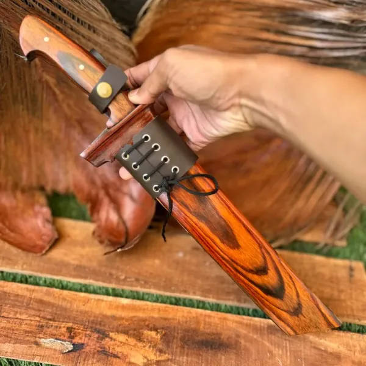
TerlarisGolok baja carbon terbaik untuk berkebun dan pertanian. Pengrajin lokal Bandung, ketajaman presisi, tahan lama untuk kebutuhan harian di ladang.
Tanya Harga via WA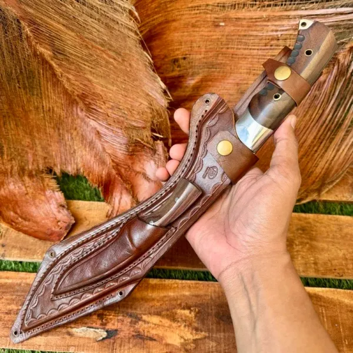
TerlarisPisau berburu profesional blade baja carbon khusus untuk hunting. Dirancang skinning dan persiapan hewan buruan, gagang tahan lembab, genggaman kuat.
Tanya Harga via WA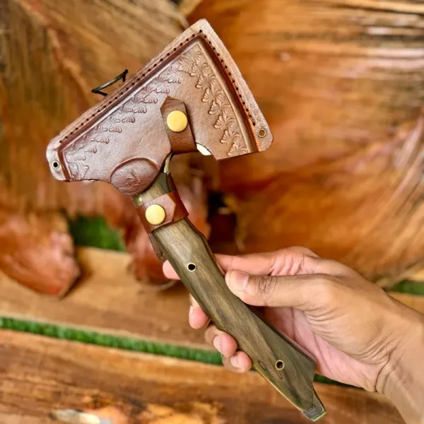
TerlarisKampak pembelah kayu berkualitas tinggi untuk outdoor dan kehutanan. Kepala baja tempa, gagang kokoh kuat, efisien untuk pembelahan kayu cepat.
Tanya Harga via WA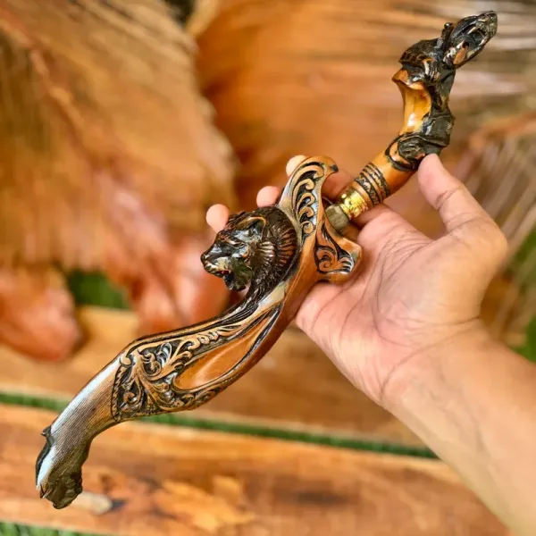
TerlarisKujang asli Sunda authentic handmade pengrajin Bandung. Warisan budaya Nusantara, baja berkualitas, cocok koleksi dan kostum tradisional Jawa Barat.
Tanya Harga via WA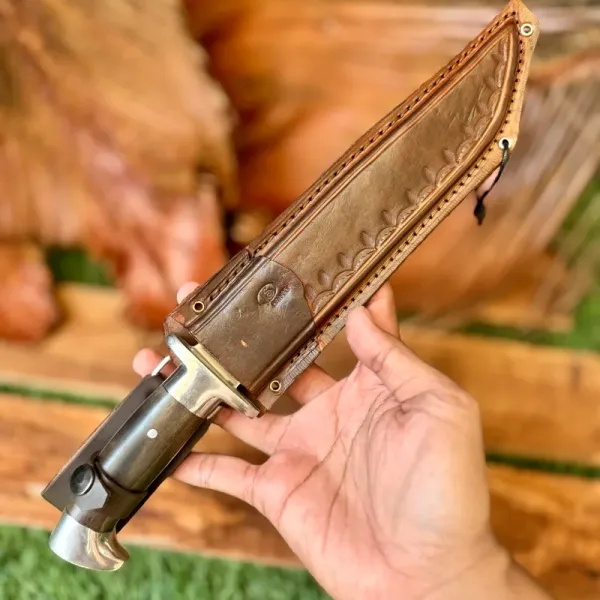
TerlarisPisau tactical militer grade untuk pertahanan diri dan outdoor. Blade baja high carbon, handle anti-slip ergonomis, cocok profesional dan militer Indonesia.
Tanya Harga via WA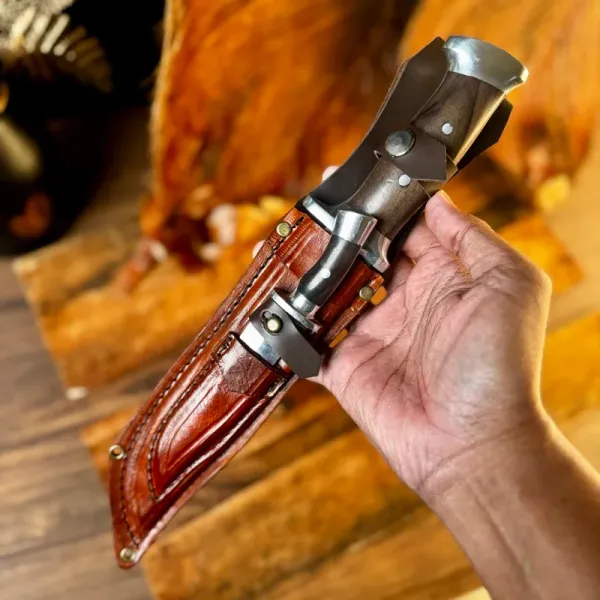
TerlarisPisau survival full tang untuk camping dan hiking outdoor Indonesia. Konstruksi full tang, blade tebal, tahan kondisi ekstrem alam liar Nusantara.
Tanya Harga via WA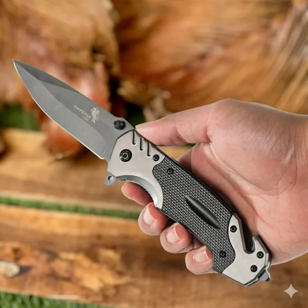
Pisau camping lipat ringan untuk petualangan outdoor dan hiking. Mudah dibawa, blade stainless berkualitas, aman untuk pemula camping dan outdoor Indonesia.
Tanya Harga via WA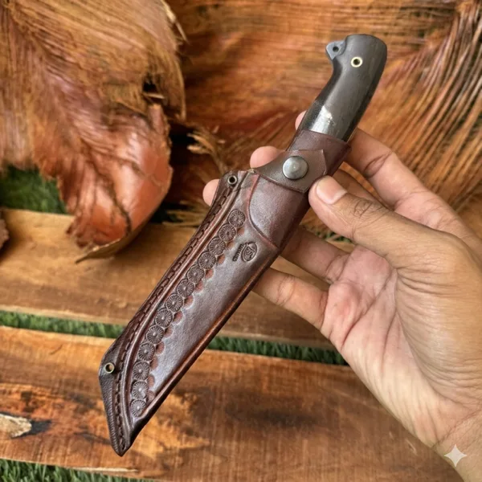
Pisau hiking ringan untuk trail dan pendakian gunung Indonesia. Desain minimalis, bobot ringan, blade tajam, cocok pendaki gunung pemula maupun profesional.
Tanya Harga via WA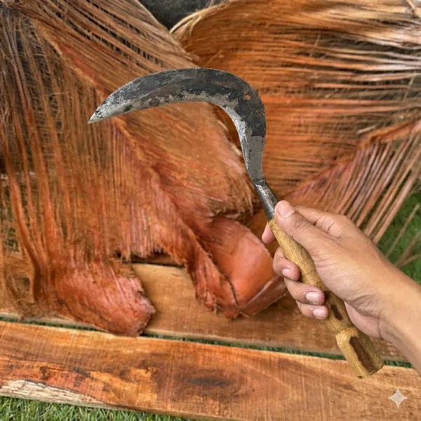
TerlarisArit sawah premium bahan baja carbon pilihan untuk panen dan berkebun. Gagang ergonomis kayu jati, tajam presisi, cocok petani profesional Indonesia.
Tanya Harga via WA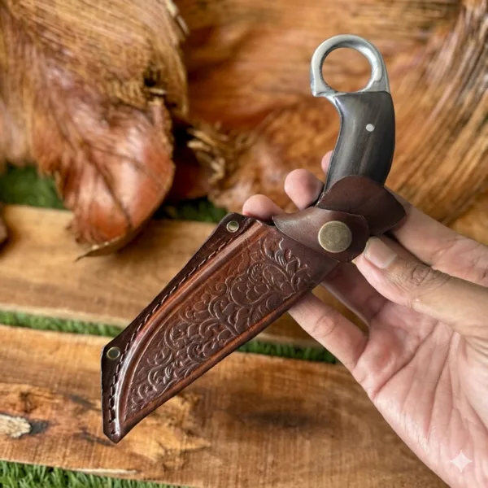
Stok TerbatasPisau seset kulit hewan buruan profesional untuk persiapan daging. Blade tipis ultra-tajam, ergonomis, mempermudah proses skinning dan pengolahan hasil buruan.
Tanya Harga via WA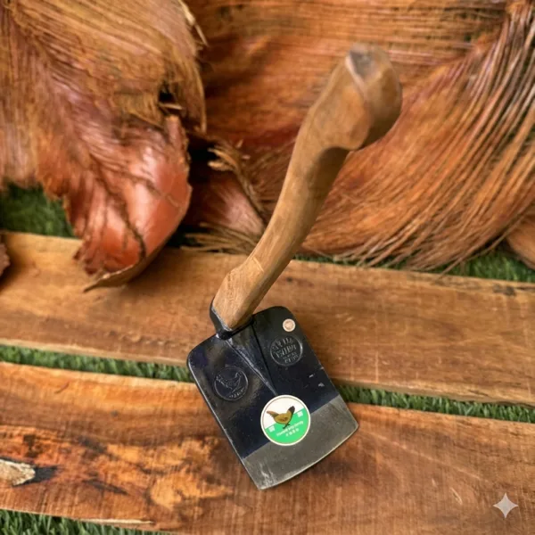
TerlarisCangkul gagang kayu jati premium untuk berkebun dan pertanian. Baja tempa berkualitas, gagang jati kuat ergonomis, ideal petani dan pecinta kebun Indonesia.
Tanya Harga via WA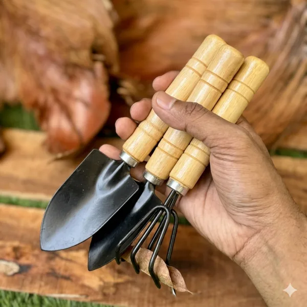
Sekop mini kebun ringan untuk berkebun urban dan taman rumahan. Ukuran kompak praktis, baja berkualitas, cocok penanaman bibit dan perawatan tanaman hias.
Tanya Harga via WAKeunggulan yang menjadikan kami pilihan utama ribuan pelanggan di seluruh Indonesia
Setiap produk menggunakan baja carbon grade terbaik, diproses teknik tempa tradisional untuk ketajaman dan ketahanan optimal.
Kami menjamin kualitas setiap produk yang keluar dari bengkel kami. Cacat produksi? Kami ganti atau perbaiki tanpa syarat.
Didukung pengrajin Bandung berpengalaman yang mewarisi ilmu tempa turun-temurun lebih dari dua generasi.
Harga langsung dari pengrajin tanpa perantara, transparan dan kompetitif. Kualitas premium tidak harus menguras kantong.
Bermitra dengan ekspedisi terpercaya — JNE, J&T, Sicepat — memastikan produk sampai ke 34 provinsi dengan aman.
Setiap produk menggabungkan estetika budaya Nusantara dengan fungsi modern, menjadi kebanggaan tersendiri bagi penggunanya.
PisauNusantara adalah toko perkakas kebun dan pisau outdoor Indonesia terpercaya yang berdiri sejak 2016 di Jl. Raya Bojongsoang No.85, Bojongsoang, Kec. Bojongsoang, Kabupaten Bandung, Jawa Barat 40288. Kami menghadirkan alat pertanian berkualitas dan koleksi pisau outdoor lengkap yang dibuat oleh pengrajin lokal berpengalaman.
Sebagai toko pisau terpercaya Bandung, kami menyediakan berbagai produk mulai dari golok, arit, cangkul, sekop, hingga pisau survival Indonesia berkelas, pisau tactical, pisau camping, dan kujang asli Sunda yang autentik. Setiap produk melewati seleksi ketat menggunakan baja carbon berkualitas tinggi yang diproses dengan teknik tempa tradisional.
Apa yang membedakan PisauNusantara adalah komitmen kami menggabungkan kearifan lokal Nusantara dengan kebutuhan modern. Pengrajin kami mewarisi ilmu tempa turun-temurun, menghasilkan pisau outdoor Indonesia dan perkakas kebun yang tajam, tahan lama, sekaligus bernilai estetika tinggi.
Dalam satu dekade, PisauNusantara telah melayani lebih dari 10.000 pelanggan puas di 34 provinsi Indonesia — dari Sabang hingga Merauke — dengan standar kualitas dan pelayanan terbaik.
Dari Sabang sampai Merauke, produk PisauNusantara siap dikirimkan ke alamat Anda
"Setiap bilah lahir dari tangan yang sama yang telah menempa selama puluhan tahun. Inilah yang membedakan warisan dari sekadar perkakas."
Kepuasan pelanggan adalah bukti nyata kualitas produk dan layanan PisauNusantara
Golok Baja Carbon dari PisauNusantara kualitasnya luar biasa! Sudah saya pakai 6 bulan untuk berkebun dan masih tajam seperti baru. Pengiriman ke Bogor juga cepat, hanya 2 hari!
Saya beli Pisau Survival Full Tang untuk kegiatan hiking di Jawa. Build-nya solid banget, full tang benar-benar kokoh dan bisa diandalkan. Recommended banget untuk pecinta outdoor Indonesia!
Kujang Khas Sunda yang saya pesan benar-benar autentik dan sangat indah. Craftsmanship-nya luar biasa, terasa nilai budayanya. Sampai ke Medan dalam kondisi sempurna dengan packaging aman.
Cangkul Gagang Kayu Jati-nya sangat memuaskan! Gagang kayunya halus tidak menyakiti tangan, dan cangkulnya berat-ringan pas untuk berkebun di rumah. Harga juga sangat worth it!
Pesan dari Makassar ke Bandung, barang datang dalam 4 hari. Pisau Camping Lipat-nya compact dan tajam, perfect untuk saya yang sering camping di Sulawesi. Terima kasih PisauNusantara!
Temukan jawaban atas pertanyaan umum seputar produk dan layanan PisauNusantara
Siap membantu Anda memilih perkakas kebun dan pisau outdoor terbaik. Tim kami aktif Senin–Sabtu pukul 08.00–17.00 WIB dan siap merespons pertanyaan Anda dengan cepat.
Chat WhatsApp Sekarang